MY WORK WITH TECHNOLOGY
Projects
A showcase of projects built while exploring modern technologies, strengthening problem-solving skills, and gaining hands-on experience in software development, machine learning, and full-stack development.
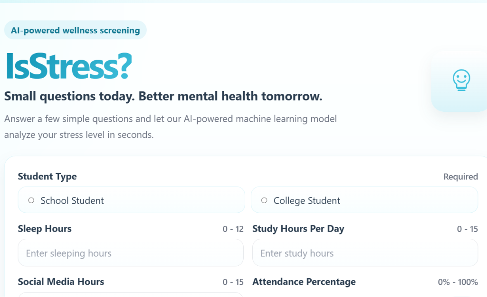
IsStress
IsStress is an AI-powered Student Stress Prediction System developed to help students understand their stress levels based on their daily lifestyle and academic habits.
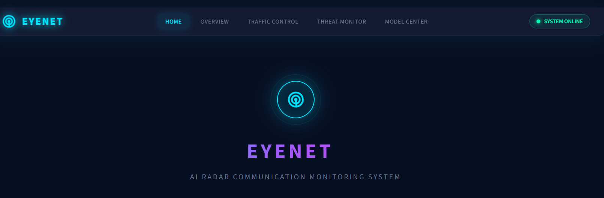
EyeNet
AI-powered radar monitoring platform that detects abnormal communication behavior and potential jamming attacks using machine learning, threat classification, and real-time analytics.
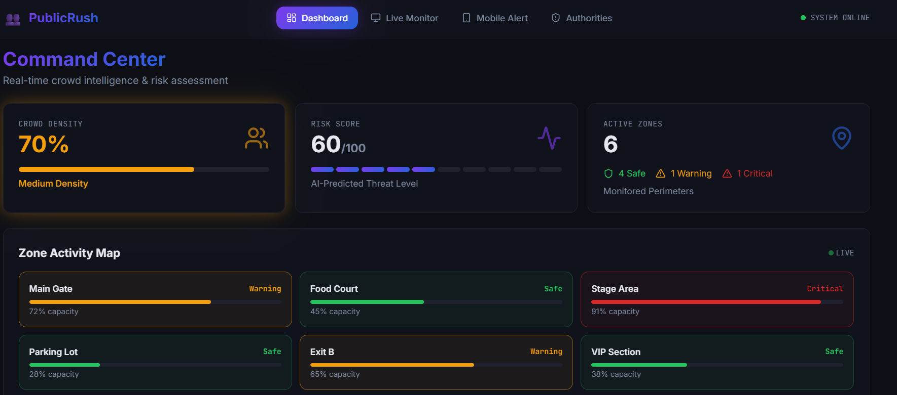
PublicRush
A prototype for a real-time crowd intelligence platform that monitors public gathering density, detects potential risk zones, and helps authorities prevent crowd-related incidents.
Adhikaar
AI-powered legal assistant helping Indian citizens understand their rights, analyze legal documents, generate complaints, and receive step-by-step legal guidance.
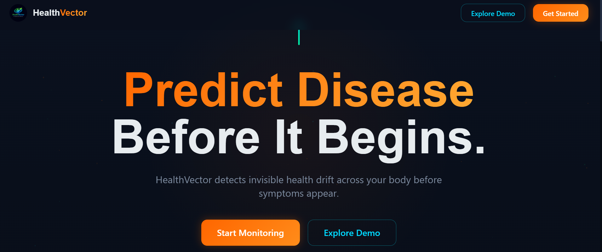
HealthVector
A frontend prototype for a predictive health intelligence platform that identifies early biological health drift and transforms fragmented health data into actionable preventive insights.
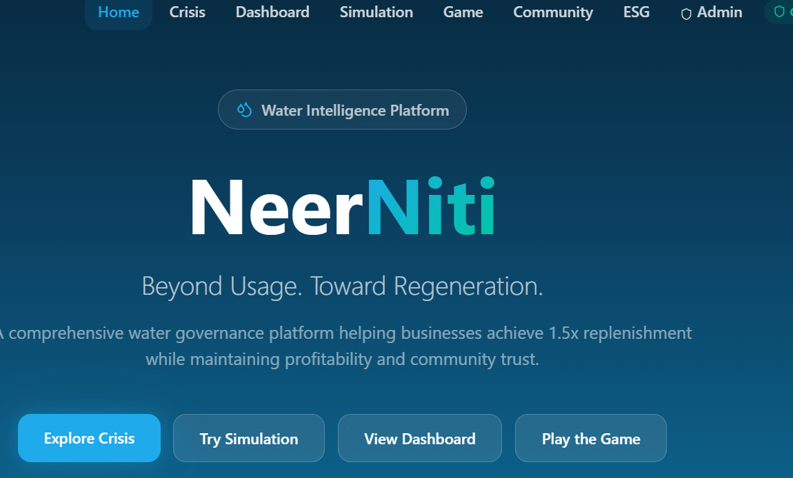
NeerNiti
An ideated solution which integrates water governance ecosystem combining analytics, monitoring, simulations, ESG reporting, and decision-support tools for sustainable management.
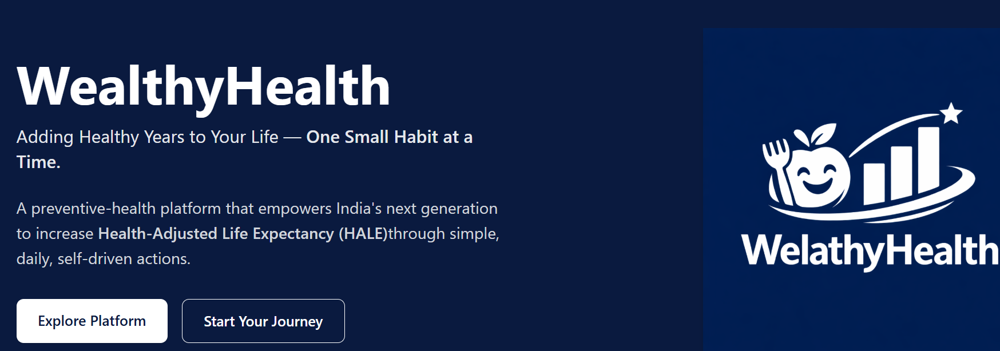
Wealthy Health
A preventive healthcare platform's frontend which is designed on improving Health-Adjusted Life Expectancy through personalized wellness recommendations and proactive health tracking.
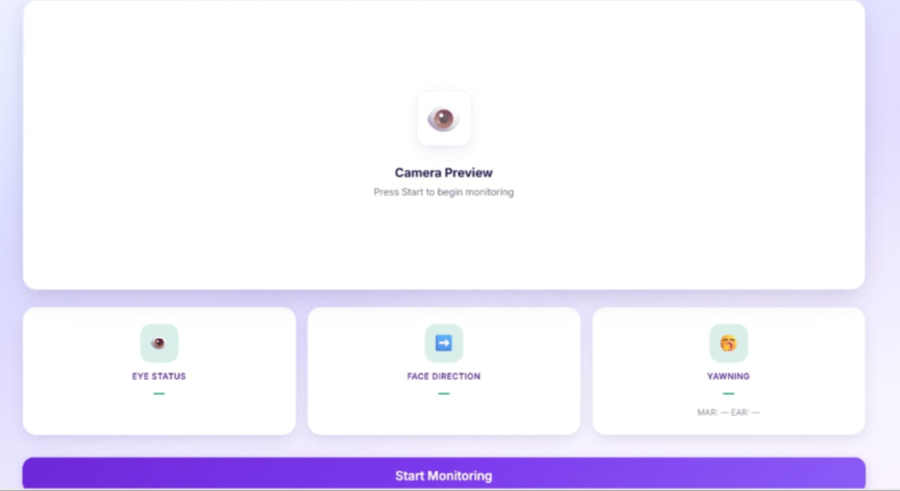
VisionCam
Computer vision based driver safety monitoring system capable of detecting drowsiness, distraction, and unsafe driving behavior in real time.
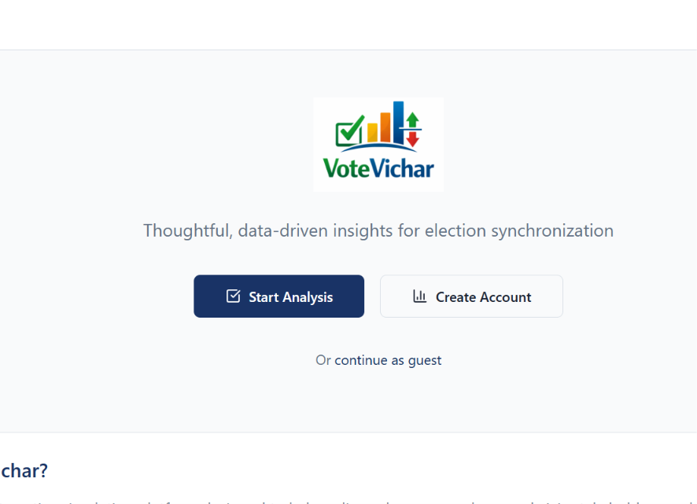
VoteVichar
A data-driven election synchronization simulator that helps policymakers evaluate and compare different electoral scheduling scenarios through interactive dashboards, live analytics, cost projections, and visual decision-support tools.

Nextra
AI-powered security surveillance system designed to overcome traditional CCTV limitations by combining facial recognition, behavioral analysis, motion tracking, and identity-based monitoring for more reliable threat detection.
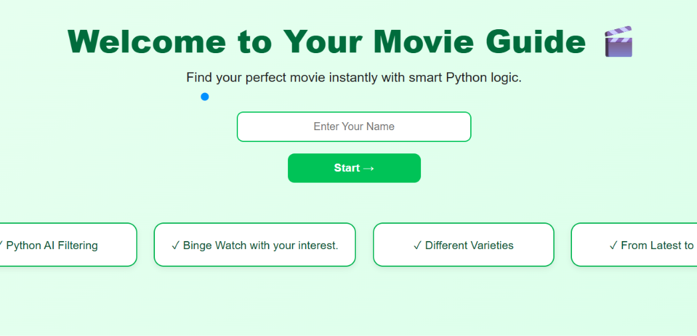
Movie Recommender
A beginner-friendly machine learning project built to learn how recommendation systems work by connecting Python, ML models, and backend development to deliver personalized movie suggestions based on user preferences.
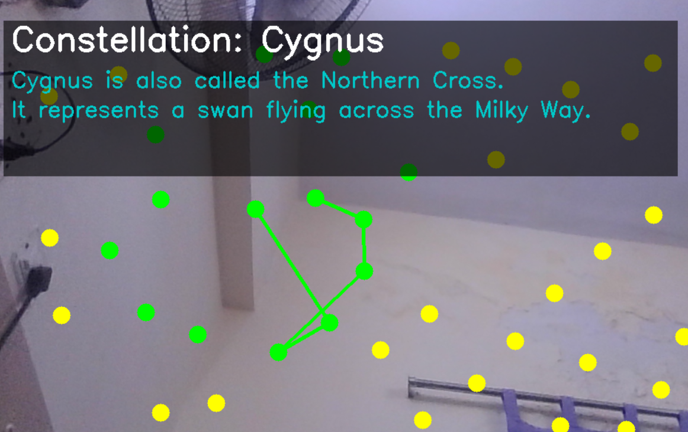
Constellations Game
An interactive computer vision game built using MediaPipe and OpenCV that allows users to create star constellations through hand tracking. Players connect stars using finger gestures, unlock constellation paths, and discover fascinating information about completed constellations.
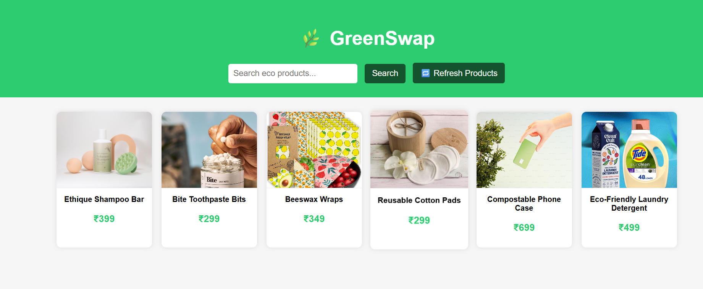
GreenSwap
Sustainable shopping assistant that helps users discover eco-friendly alternatives to everyday products. Built to encourage conscious consumer choices through a simple, interactive, and accessible shopping experience.
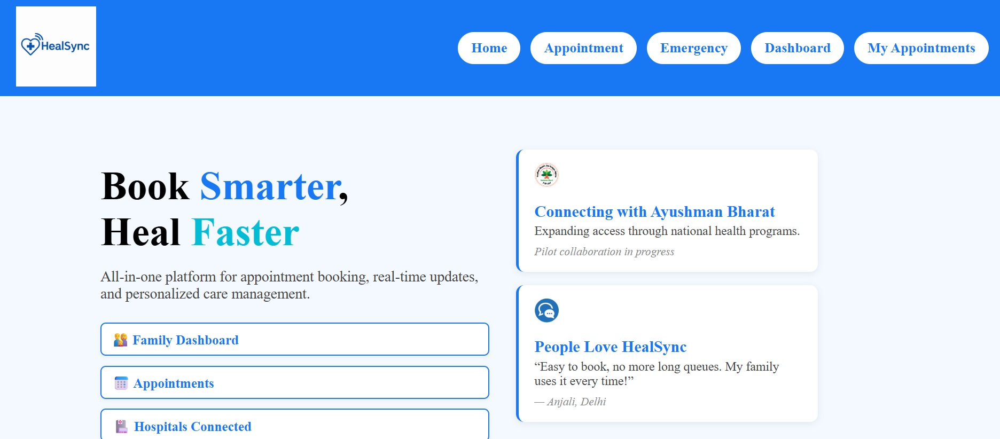
HealSync
AI-enabled healthcare appointment and patient management platform that streamlines doctor scheduling, reduces waiting times through QR-based check-ins, and optimizes hospital operations with smart emergency slot allocation.
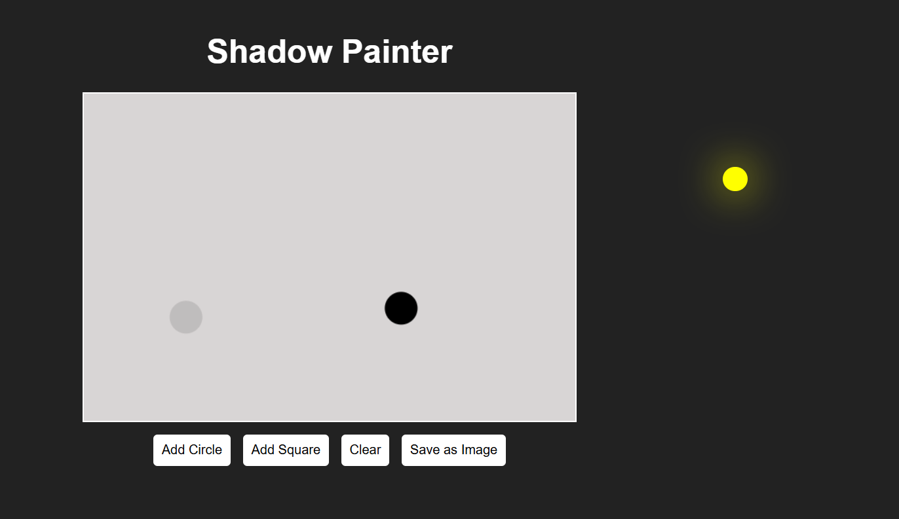
Shadow Painter
An interactive visualization project that demonstrates how shadows change when the position of a light source or object is modified. Built to explore basic concepts of light, shadow formation, and geometric projections.
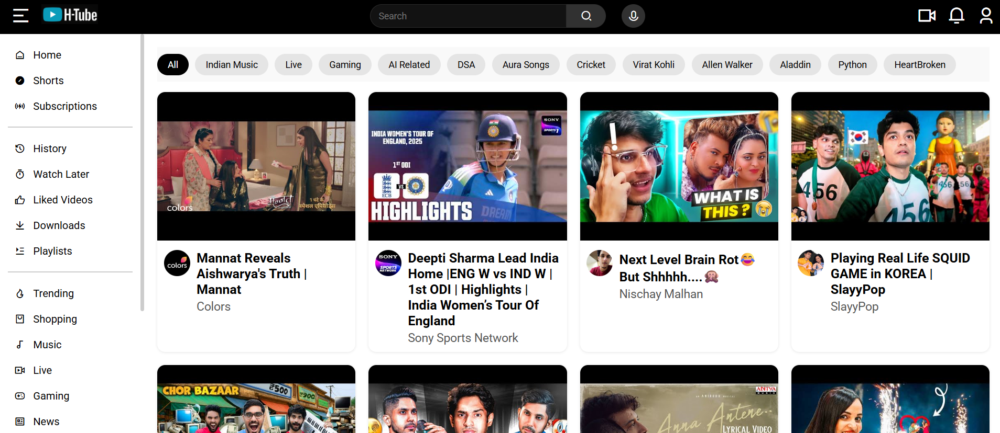
HTube
A front-end YouTube clone built using HTML, CSS, and JavaScript to practice responsive UI design, layout structuring, and interactive web development concepts.

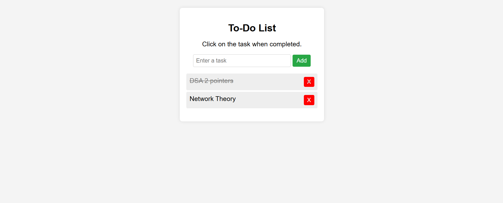
To-Do List
A simple task management application that helps users organize daily activities, track pending tasks, and manage productivity using browser local storage.